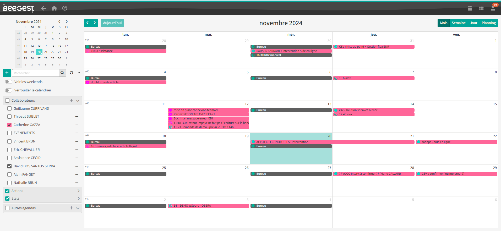

Bienvenue
Je m'appelle Guillaume Currivand,
Diplômé en ingénierie informatique en août 2024. Je suis capable de développer en full stack avec une préférence pour le front-end. À terme, mon objectif est de proposer un logiciel de gestion des stocks et des commandes. Pour le moment, je souhaite mettre à disposition mes compétences et continuer à les perfectionner. Si vous voulez en savoir plus, je vous invite à poursuivre votre navigation.
Diplômé en ingénierie informatique en août 2024. Je suis capable de développer en full stack avec une préférence pour le front-end. À terme, mon objectif est de proposer un logiciel de gestion des stocks et des commandes. Pour le moment, je souhaite mettre à disposition mes compétences et continuer à les perfectionner. Si vous voulez en savoir plus, je vous invite à poursuivre votre navigation.
-------------------------
Projets
-----------
Système de mise à jour d'images Linux
Mai-Août 2024
Python
Jenkins
Linux
Architecture
Développement et intégration d'un serveur Jenkins permettant une mise à jour automatique et personnalisée des OS Linux pour les modules vendus par l'entreprise Avnet Embedded.
-----------
Tests audio sur bancs de test
Avril 2024
C++
Linux
Jeux de tests
Ajout des tests audio développés en C++ pour les modules vendus par
Avnet Embedded. Intégration de ces tests pour une
utilisation sur les bancs des lignes de production.
-----------
Développement full stack d'un progiciel de gestion
Septembre 2021-Mars 2024
Delphi
C#
.NET
Entity Framework
JS
SQL
Migration
Dans le cadre de mon alternance, j'ai participé à la migration d'un système de planification des ressources de la technologie Delphi vers une version full web en C#.

⦁ 1ère année : Développement supervisé par mon tuteur, migration de la logique métier de Delphi vers la nouvelle technologie.
Optimisation des requêtes SQL et travail sur la base de données.
Développement front-end de vues pour le logiciel.
Optimisation des requêtes SQL et travail sur la base de données.
Développement front-end de vues pour le logiciel.
⦁ 2ème année : Développement semi-supervisé par mon tuteur, intégration d'un agenda dans la version full web. Adaptation à la charte graphique et ajout de fonctionnalités.

⦁ 3ème année : Développement entièrement autonome, conception, développement et intégration d'un nouveau système de licences sous forme de microservice.
Utilisation de l'ORM Entity et création d'un service de licences dans notre version web. Mise en place d'un serveur accessible uniquement par l'entreprise pour la gestion des licences clients.
Utilisation de l'ORM Entity et création d'un service de licences dans notre version web. Mise en place d'un serveur accessible uniquement par l'entreprise pour la gestion des licences clients.

-----------
Logiciel de gestion d'atelier
Septembre 2024
NodeJS
ReactJS
TypeScript
MySQL
Dans le cadre d'un processus de recrutement, j'ai développé une petite application permettant la gestion d'un atelier de réparation de matériel de sport.
Utilisation de React pour le front-end et NodeJS/TypeScript pour le back-end.
Utilisation de React pour le front-end et NodeJS/TypeScript pour le back-end.
-----------
Folio (ce site internet)
Novembre 2024
ThreeJS
Web Dev
JavaScript
CSS
Je voulais un portfolio original. J'ai donc choisi l'implémentation d'éléments graphiques 3D avec lesquels on peut interagir. De plus, les animations ont été réalisées par mes soins à l'aide de THREE.JS.
-----------
Restockio
Novembre 2024 - En cours
ReactJS
C#
.NET
MySQL
Web Dev
Restockio est une solution simple et intuitive de gestion des commandes et des stocks pour les restaurants. Elle centralise le suivi des stocks et des commandes pour optimiser les approvisionnements, réduire le gaspillage, et améliorer l'efficacité. Gagnez du temps et concentrez-vous sur l'essentiel : cuisiner pour vos clients.
-------------------------
CNN Benchmark
Temps libre 2024
Python
Pytorch
CNN
Vision artificielle
Projet visant à tester l'état de l'art des différents réseaux de neurones convolutionnels pour la vision artificielle (LeNet, YOLO, VGG, Fast R-CNN, Mask R-CNN, etc.).
L'objectif était de les recréer "from scratch" afin de comprendre leur fonctionnement.
L'objectif était de les recréer "from scratch" afin de comprendre leur fonctionnement.
-------------------------
Suppléments
Projets d'études
ReactJS
NodeJS
Java
PHP
MySQL
NoSQL
Python
ML/IA
J'ai également réalisé de nombreux projets lors de mes études (UTBM et IUT Annecy). Je ne donne pas tous leurs détails, car je ne pense pas qu'ils reflètent exactement le monde professionnel.
Cependant, j'ai travaillé sur un réseau social (UTBM), une bataille navale revisitée (UTBM), un jeu sur la norme ISO 9001 (DUT), un site vitrine (DUT) et bien d'autres encore...
Cependant, j'ai travaillé sur un réseau social (UTBM), une bataille navale revisitée (UTBM), un jeu sur la norme ISO 9001 (DUT), un site vitrine (DUT) et bien d'autres encore...
-------------------------
Un petit plus sur moi ?
-----------
Sports
J'adore le sport, et c'est une vraie passion pour moi. Le ski, le volley, le VTT et le tennis font partie de mes activités préférées.
Pour moi, le sport est une manière de me dépasser tout en profitant de la nature et en partageant de bons moments avec les autres.
Il y a cependant quelques petits détails que je souhaite souligner.
Ce que j'aime le plus dans le VTT, c'est la construction de chemins. Je trouve cela très gratifiant de voir de nombreuses personnes les emprunter une fois terminés.
Pour le ski, j'aime plus particulièrement le freeride. J'adore repousser mes limites en descendant des pentes de plus en plus techniques, toujours dans la limite de mes capacités, bien évidemment ;).
Pour moi, le sport est une manière de me dépasser tout en profitant de la nature et en partageant de bons moments avec les autres.
Il y a cependant quelques petits détails que je souhaite souligner.
Ce que j'aime le plus dans le VTT, c'est la construction de chemins. Je trouve cela très gratifiant de voir de nombreuses personnes les emprunter une fois terminés.
Pour le ski, j'aime plus particulièrement le freeride. J'adore repousser mes limites en descendant des pentes de plus en plus techniques, toujours dans la limite de mes capacités, bien évidemment ;).

-----------
Randonnées
Je pars régulièrement en randonnée pour "prendre l'air". J'aime la tranquillité de la montagne en petit comité, loin du bruit et des foules.
Le sentier est un espace de liberté, et chaque pas rapproche un peu plus de l'objectif : le paysage, le souffle, le moment présent.
Le sentier est un espace de liberté, et chaque pas rapproche un peu plus de l'objectif : le paysage, le souffle, le moment présent.
-------------------------
Détails
Developed + Designed by Currivand Guillaume.
Computer design based on the Sketchfab model from NLM.
COPYRIGHT © 2024 Currivand Guillaume
Computer design based on the Sketchfab model from NLM.
COPYRIGHT © 2024 Currivand Guillaume